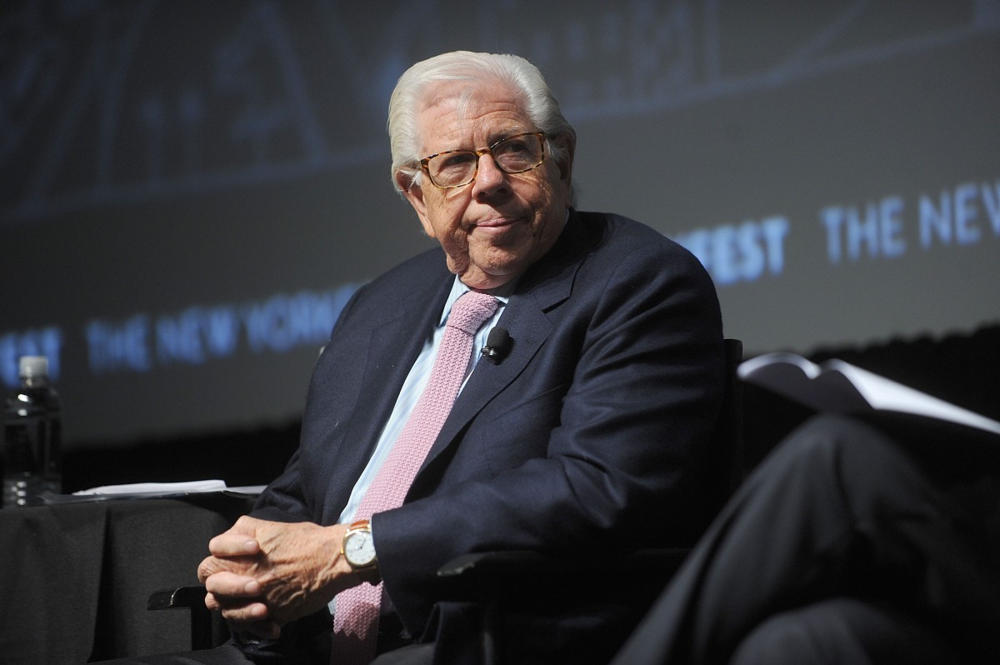
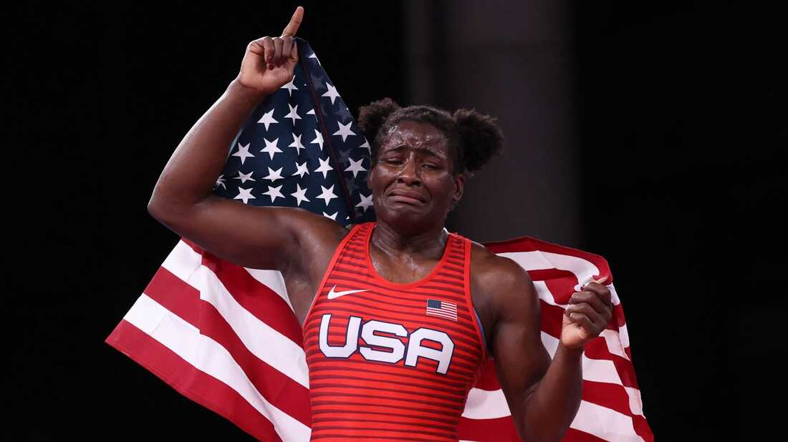

Unvaccinated people are 'worse than Watergate' says Carl Bernstein
Aug 16, 2021
Watergate journalist Carl Bernstein says that unvaccinated people are worse than Watergate, and they might possibly be worse than German chancellor Adolf Hitler.
Recently former Watergate journalist Carl Bernstein dropped a massive reality check on the world, like he has never done before.
Carl Bernstein has for the 600th time said that doing something he doesn't like is 'worse than Watergate', which for those who live under a rock or were born after the 1980s was a scandal involving former president Nixon and the DNC.
It is rare to hear such warning from one of the most credible and decorated journalists of the past century.
The U.S. condemns dangerous athlete for liking the U.S.
Aug 16, 2021
Recently female wrestler Tamyra Mensah-Stock became the 1st U.S. Black Woman to win gold in the Olympics.
After winning Tamyra made the fatal mistake of thanking her nation and God, which means that she is a terrorist.
The U.S. State Department when asked about this terrorism they agreed and condemned her actions.